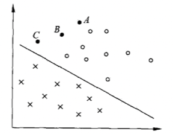
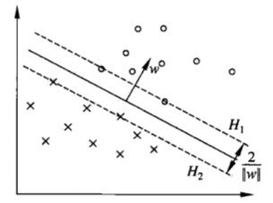
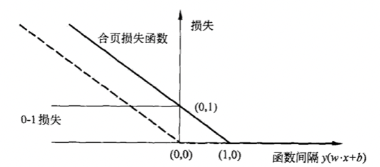
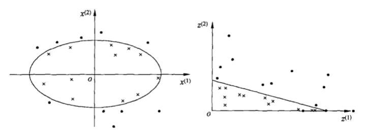

支持向量机算法
支持向量机（support vector machines，SVM）是一种分类模型，其基本定义为特征空间上的间隔最大化的线性分类器，本质上是一个求解凸二次规划的问题。
支持向量机是求解特征空间上的最大间隔（软间隔、硬间隔），是一个线性分类器，为了支持非线性的分类，引入了核技巧，用于将输入从输入空间映射到特征空间。相比较而言，核变换方法算是比支持向量机用得更广泛的一种机器学习方法。
支持向量机主要分为三类：
- 线性可分支持向量机
- 线性支持向量机
- 非线性支持向量机
简要说明它们差异前，先认识两个概念之间的关系，分别是输入空间、特征空间。假设一个分类问题的输入空间于特征空间不同，则线性可分向量机和线性支持向量机假设这两个空间的元素可以一一对应，非线性支持向量机则利用一个非线性核技巧完成映射。支持向量机的学习都是基于特征空间进行的。
下面分别进行原理解析。
线性可分支持向量机
线性可分支持向量机
假设特征空间中的训练数据集为
$$T = {(x_{1}, y_{1}), (x_{2}, y_{2}), \cdots, (x_{N}, y_{N}))}$$
学习的目标就是找到一个超平面，能将实例分到不同类中，分离超平面方程可以写为：
$$w \cdot x + b = y$$
其中 $w$ 是法向量， 法向量指向的一侧是正类，另一侧是负类。
一般情况下，当训练数据集线性可分时，存在无穷多个分离超平面。如果使用感知机算法（误分类最小的策略），此时的解会有无穷多个；线性可分支持向量机利用间隔最大化求解超平面，此时的解是唯一解。
函数间隔与几何间隔
看下面这幅图，重点看 $A、B、C$ 三点。

- $A$ 点距离超平面远，预测为正类的可信度高
- $C$ 点距离超平面近，预测为正类的可信度低
- $B$ 点介于 $A、C$ 之间，可信度也介于之间
也就是说，一个点距离分类超平面的远近可以表示分类预测的准确程度，那么在 $w \cdot x + b = 0$ 时，$|w \cdot x + b|$ 就能表示 $x$ 距离超平面的远近，而此时 $y$ 的符号是否一致可以表示分类是否正确。于是函数间隔就可以写成。
$$\hat{\gamma_{i}} = y_{i}(w \cdot x_{i} + b)$$
超平面与所有数据集的间隔就是所有样本点的函数间隔的最小值（$\gamma = \min \hat{\gamma_{i}}$ ，在这个间隔内，任意一个超平面都可以把数据集正确分类）。
不过只有函数间隔存在一个问题，只要成比例的改变 $w$ 和 $b$ （比如变成 $2w$ 和 $2b$ ），超平面不会改变，但是函数间隔却变成了原来的2倍。即有必要对 $w$ 加一些约束，如规范化:
$$||w|| = 1$$
如此可以使得函数间隔是确定的，此时函数间隔就变成了几何间隔。
$$\gamma_{i} = y_{i}(\frac{w}{||w||} \cdot x_{i} + \frac{b}{||w||})$$
同样，超平面与所有数据集的间隔就是所有样本点的函数间隔的最小值（$\gamma = \min \gamma_{i}$ ）
间隔最大化
可分离超平面有无穷多个，但是几何间隔最大的分离超平面是唯一的，在线性可分的情况下，这种间隔称为硬间隔（近似线性可分的情况下为软间隔）。
求解间隔最大的超平面可以表示为如下约束问题：
$$\begin{array}{l}
\max_{w, b} & \gamma \\
s.t & y_{i}(\frac{w}{||w||} \cdot x_{i} + \frac{b}{||w||}) \geq \gamma, & i = 1, 2,\cdots, N \\
\end{array}$$
基于几何间隔和函数间隔的关系，上式可以改写为
$$\begin{array}{l}
\max_{w, b} & \frac{\gamma}{||w||} \\
s.t & y_{i}(w \cdot x_{i} + b) \geq \hat{\gamma}, & i = 1, 2,\cdots, N \\
\end{array}$$
因为函数间隔的倍数不会改变超平面，所以我们可以取 $\hat{\gamma} = 1$，同时最大化 $\frac{1}{||w||}$ 和最小化 $\frac{1}{2}||w||^{2}$ （$\frac{1}{2}$和平方均码是为了求导方便）等价。 所以上式还可以进一步改写：
$$\begin{array}{l}
\min_{w, b} & \frac{1}{2}||w||^{2} \\
s.t & y_{i}(w \cdot x_{i} + b) - 1 \geq 0, & i = 1, 2,\cdots, N \\
\end{array}$$
目标函数式二次函数，约束条件是仿射函数，上述的凸优化问题就成了凸二次规划问题，可求解得最优解 $w^{}$，$b^{}$，由此得最优分离超平面
$$w^{*} \cdot x + b^{*} = 0$$
间隔边界
训练数据集中与分离超平面距离最近的样本点的实例即为支持向量，那么在约束条件下，支持向量就是：
$$y_{i}(w \cdot x_{i} + b) - 1 = 0$$
对于 $y_{i} = +1$ 的点，支持向量超平面为
$$H_{1}: w \cdot x + b = 1$$
对于 $y_{i} = -1$ 的点，支持向量超平面为
$$H_{2}: w \cdot x + b = -1$$

所以间隔依赖法向量 $w$，为 $\frac{2}{||w||}$，$H_{1}$ 和 $H_{2}$ 为间隔边界。
线性可分支持向量机对偶算法
凸优化问题转化为对偶问题
求解最优化问题可以应用拉格朗日对偶性，求解对偶问题得到原始问题的解，求解对偶问题至少有两个好处：
- 对偶问题更容易求解
- 可以自然的引入核函数，推广到非线性分类问题
首先构建一个拉格朗日函数，对每个不等式约束引入拉格朗日乘子（拉格朗日乘子向量$\alpha = (\alpha_{1}, \alpha_{2}, \cdots, \alpha_{N})^{T}$）。定义拉格朗日函数为
$$L(w, b, \alpha) = \frac{1}{2}||w||^{2} - \sum_{i=1}^{N}\alpha_{i}y_{i}(w \cdot x_{i} + b) + \sum_{i=1}^{N}\alpha_{i}$$
原始问题的对偶问题变成了极大极小问题。
$$\max_{\alpha} \min_{w, b} L(w, b, \alpha)$$
解该对偶问题，首先求 $L(w, b, \alpha)$ 对 $w, b$ 的极小，再求对 $\alpha$ 的极大。
求 $\min_{w, b} L(w, b, \alpha)$
将 $L(w, b, \alpha)$ 分别对 $w, b$ 求偏导数并令其为0。
$$\frac{\partial L(w, b, \alpha)}{\partial w} = w - \sum_{i = 1}^{N}\alpha_{i}y_{i}x_{i} = 0$$
$$\frac{\partial L(w, b, \alpha)}{\partial b} = -\sum_{i = 1}^{N}\alpha_{i}y_{i} = 0$$
得
$$w = \sum_{i = 1}^{N}\alpha_{i}y_{i}x_{i}$$
$$\sum_{i = 1}^{N}\alpha_{i}y_{i} = 0$$
带入拉格朗日函数得
$$\begin{align}
L(w, b, \alpha)
& = \frac{1}{2}\sum_{i = 1}^{N}\sum_{j = 1}^{N}\alpha_{i}\alpha_{j}y_{i}y_{j}(x_{i} \cdot x_{j}) - \sum_{i = 1}^{N}\alpha_{i}y_{i}((\sum_{j = 1}^{N}\alpha_{j}y_{j}x_{j}) \cdot x_{i} + b) + \sum_{i = i}^{N}\alpha_{i} \\
& = -\frac{1}{2}\sum_{i = 1}^{N}\sum_{j = 1}^{N}\alpha_{i}\alpha_{j}y_{i}y_{j}(x_{i} \cdot x_{j}) + \sum_{i = i}^{N}\alpha_{i} \\
\end{align}$$
求$\min_{w, b} L(w, b, \alpha)$ 对 $\alpha$ 的极大
得如下对偶问题
$$\begin{array}{l}
\max_{\alpha} & -\frac{1}{2}\sum_{i = 1}^{N}\sum_{j = 1}^{N}\alpha_{i}\alpha_{j}y_{i}y_{j}(x_{i} \cdot x_{j}) + \sum_{i = i}^{N}\alpha_{i} \\
s.t & \sum_{i = 1}^{N} \alpha_{i} y_{i} = 0 \\
s.t & \alpha_{i} \geq 0, & i = 1, 2,\cdots, N
\end{array}$$
将极大转化为极小就得到如下的对偶最优化问题
$$\begin{array}{l}
\min_{\alpha} & \frac{1}{2}\sum_{i = 1}^{N}\sum_{j = 1}^{N}\alpha_{i}\alpha_{j}y_{i}y_{j}(x_{i} \cdot x_{j}) - \sum_{i = i}^{N}\alpha_{i} \\
s.t & \sum_{i = 1}^{N} \alpha_{i} y_{i} = 0 \\
s.t & \alpha_{i} \geq 0, & i = 1, 2,\cdots, N
\end{array}$$
反解原始最优化问题
求得 $\alpha$ 后反解的原始最优化问题的解，存在一个下标 $j$ ，使得 $\alpha_{j} \geq 0$ ，有
$$w^{*} = \sum_{i = 1}^{N} \alpha_{i}^{*}y_{i}x_{i}$$
$$b^{*} = y_{j} - \sum_{i = 1}^{N}\alpha_{i}y_{i}(x_{i} \cdot x_{j})$$
以上就完成了线性可分支持向量机的算法，但是实际数据经常不是线性可分的，于是有了线性支持向量机。
线性支持向量机
线性支持向量机
线性可分支持向量机中有较强的不等式约束，在更一般的情况下，这些不等式约束并非全部成立，因此需要从上面的硬间隔改为软间隔。
同样假设特征空间的训练数据集为
$$T = {(x_{1}, y_{1}), (x_{2}, y_{2}), \cdots, (x_{N}, y_{N}))}$$
线性不可分意味着函数间隔不能满足大于等于1的约束条件，为了解决这个问题，引入一个松弛变量 $\xi_{i} \geq 0$ ，使得函数间隔加上这个松弛变量后满足大于等于1的条件。于是，约束条件就变成了
$$y_{i}(w \cdot x_{i} + b) \geq 1 - \xi_{i}$$
同时，每一个松弛变量 $\xi_{i}$ 会有一个代价，于是原目标函数就变成了
$$\frac{1}{2}||w||^{2} + C \sum_{i = 1}^{N} \xi_{i}$$
其中 $C \geq 0$ 为惩罚函数，$C$ 值越大时对误分类的惩罚越大，反之越小。上式表示让间隔仅可能大，同时使误分类尽可能小，而 $C$ 就是二者的调和系数。
于是线性不可能分的支持向量机就变成了如下的凸二次规划问题。
$$\begin{array}{l}
\min_{w, b, \xi} & \frac{1}{2}||w||^{2} + C \sum_{i = 1}^{N} \xi_{i} \\
s.t & y_{i}(w \cdot x_{i} + b) \geq 1 - \xi_{i} & i = 1, 2, \cdots, N \\
s.t & \xi \geq 0, & i = 1, 2, \cdots, N
\end{array}$$
线性支持向量机对偶算法
首先还是构造拉格朗日函数（ $\alpha_{i} \geq 0, \mu \geq 0$ ）
$$L(w, b, \xi, \alpha, \mu) = \frac{1}{2}||w||^{2} + C \sum_{i = 1}^{N}\xi_{i} - \sum_{i = 1}^{N}\alpha_{i}(y_{i}(w \cdot x_{i} + b) - 1 + \xi_{i}) - \sum_{i = 1}^{N}\mu \xi_{i}$$
首先求 $L(w, b, \xi, \alpha, \mu)$ 对 $w, b, \xi$ 的极小
$$\frac{\partial L(w, b, \xi, \alpha, \mu)}{\partial w} = w - \sum_{i = 1}^{N}\alpha_{i}y_{i}x_{i} = 0$$
$$\frac{\partial L(w, b, \xi, \alpha, \mu)}{\partial b} = \sum_{i = 1}^{N}\alpha_{i}y_{i} = 0$$
$$\frac{\partial L(w, b, \xi, \alpha, \mu)}{\partial \xi_{i}} = C - \alpha_{i} - \mu_{i} = 0$$
带入拉格朗日函数中有
$$\min_{w, b, \xi} L(w, b, \xi, \alpha, \mu) = -\frac{1}{2}\sum_{i = 1}^{N}\sum_{j = 1}^{N}\alpha_{i}\alpha_{j}y_{i}y_{j}(x_{i} \cdot x_{j}) + \sum_{i = i}^{N}\alpha_{i}$$
再对 $\min_{w, b, \xi} L(w, b, \xi, \alpha, \mu)$ 求 $\alpha$ 的极大，得对偶问题
$$\begin{array}{l}
\max_{\alpha} & -\frac{1}{2}\sum_{i = 1}^{N}\sum_{j = 1}^{N}\alpha_{i}\alpha_{j}y_{i}y_{j}(x_{i} \cdot x_{j}) + \sum_{i = i}^{N}\alpha_{i} \\
s.t & \sum_{i = 1}^{N} \alpha_{i} y_{i} = 0 \\
s.t & C - \alpha_{i} - \mu_{i} = 0 \\
s.t & \alpha_{i} \geq 0 \\
s.t & \mu_{i} \geq 0, & i = 1, 2,\cdots, N
\end{array}$$
对约束条件进行变换可以得到
$$\begin{array}{l}
\min_{\alpha} & \frac{1}{2}\sum_{i = 1}^{N}\sum_{j = 1}^{N}\alpha_{i}\alpha_{j}y_{i}y_{j}(x_{i} \cdot x_{j}) - \sum_{i = i}^{N}\alpha_{i} \\
s.t & \sum_{i = 1}^{N} \alpha_{i} y_{i} = 0 \\
s.t & 0 \leq \alpha_{i} \leq C, & i = 1, 2,\cdots, N
\end{array}$$
反解原始最优化问题就有，若存在一个 $\alpha^{*}$ 的一个分量 $\alpha_{j}^{*}, 0 \leq \alpha_{j} \leq C$ 有
$$w^{*} = \sum_{i = 1}^{N} \alpha_{i}^{*}y_{i}x_{i}$$
$$b^{*} = y_{j} - \sum_{i = 1}^{N}\alpha_{i}y_{i}(x_{i} \cdot x_{j})$$
合页损失函数
线性支持向量机还可以写成如下的最小化目标函数
$$\min_{w, b} \sum_{i = 1}^{N}[1 - y_{i}(w \cdot x_{i} + b)]_{+} + \lambda||w||^{2}$$
其中下标 $+$ 表示取正值的函数
$$[z]_{+}= \begin{cases} z, & z > 0 \ 0, & z \leq 0 \end{cases}$$
令
$$[1 - y_{i}(w \cdot x_{i} + b)]{+} = \xi{i}$$
则需要最小化的目标函数可以可以写成
$$\min_{w, b} \sum_{i = 1}^{N}\xi_{i} + \lambda||w||^{2}$$
取 $\lambda = \frac{1}{2C}$ 则
$$\min_{w, b} \frac{1}{C}(\frac{1}{2}||w||^{2} + C \sum_{i = 1}^{N}\xi_{i})$$
与原目标函数等价。
因为该损失函数形似合页，故得名为合页函数，下图即是一个函数图形。横轴是函数间隔，纵轴是损失。

非线性支持向量机
核技巧
对于一个给定的训练数据集，有时候一个实数空间上的线性平面不可分，需要一个超曲面才能分开，这样的问题就是非线性可分问题。
为了解决非线性问题，可以先通过一个非线性变换，将非线性问题变换为线性问题，然后通过解变换后的线性问题来求解原来的非线性问题。如下面的两幅图，可以将左图椭圆变换为右图中的直线。

对于示图问题，可以定义一个原空间到新空间的映射变换
$$z = \phi(x) = ((x^{(1)})^{2}, (x^{(2)})^{2})^{T}$$
那么原空间中过椭圆
$$w_{1}(x^{(1)})^{2} + w_{2}(x^{(2)})^{2} + b = 0$$
变换成新空间中的直线
$$w_{1}z^{(1)} + w_{2}z^{(2)} + b = 0$$
如此，原空间的非线性可分就变成了新空间中的线性可分。
现在定义核函数，对于一个从输入空间 $X$ 到输出空间 $H$ 的映射
$$\phi(x): X \to H$$
使得所有的 $x, z \in X$ ，函数 $K(x, z)$ ，满足内积运算
$$K(x, z) = \phi(x) \cdot \phi(z)$$
则称 $K(x, z)$ 为核函数，$\phi(x)$ 为映射函数。
通常情况下，核技巧在学习和预测时只定义核函数 $K(x, z)$ ，而不会显式的定义映射函数 $\phi$ ，因为特征空间经常是高维的（甚至无穷维），而且对于特定的 $K(x, z)$ ，可能有很多不同的映射 $\phi$。
在线性支持向量机的对偶问题中，目标函数只涉及了实例与实例之间的内积，所以将内积 $x_{i} \cdot x_{j}$ 使用核函数 $K(x_{i}, x_{j})$ 来代替，此时对偶问题的目标函数就成为了
$$W(\alpha) = \frac{1}{2}\sum_{i = 1}^{N}\sum_{j = 1}^{N}\alpha_{i}\alpha_{j}y_{i}y_{j}K(x_{i},x_{j}) - \sum_{i = 1}^{N}\alpha_{i}$$
这等价于经过映射函数将原来的输入空间变换到一个新的特征空间，将输入空间中的内积 $x_{i} \cdot x_{j}$ 变换成特征空间的内积 $\phi(x_{i}) \cdot \phi(x_{j})$ ，在新的特征空间里学习线性支持向量机。
所以对于非线性支持向量机学习算法，可以构造如下的最优化问题：
$$\begin{array}{l}
\min_{\alpha} & \frac{1}{2}\sum_{i = 1}^{N}\sum_{j = 1}^{N}\alpha_{i}\alpha_{j}y_{i}y_{j}K(x_{i}, x_{j}) - \sum_{i = i}^{N}\alpha_{i} \\
s.t & \sum_{i = 1}^{N} \alpha_{i} y_{i} = 0 \\
s.t & 0 \leq \alpha_{i} \leq C, & i = 1, 2,\cdots, N
\end{array}$$
求得最优解 $\alpha^{*} = (\alpha_{1}^{*}, \alpha_{2}^{*}, \cdots, \alpha_{N}^{*})^{T}$
选择 $\alpha^{*}$ 的一个正分量 $0 \leq \alpha_{j}^{*} < C$ 得
$$b^{*} = y_{i} - \sum_{i = 1}^{N}\alpha_{i}^{*}y_{i}K(x_{i}, x_{j})$$
核函数
正定核
既然映射函数可以通过内积求得核函数，而且核函数可以直接在特征空间上使用线性支持向量机算法，那么，如何判定一个函数 $K(x, z)$ 是不是一个核函数呢。
通常情况下所说的核函数都是正定核函数，下面就来看看成为正定核函数的充要条件。
函数 $K(x, z)$ 是正定核函数的充要条件是对于任意的 $x_{i}$ ，$K(x, z)$ 对应的 Gram 矩阵
$$K = [K(x_{i}, x_{j})]_{m \times m}$$
是半正定的。
必要性比较好证明，对于一个正定核，有
$$K(x, z) = \phi(x) \cdot \phi(z)$$
构造 $K(x, z)$ 关于 $x_{i}, x_{2}, \cdots, x_{m}$ 的Gram矩阵为
$$[K_{ij}]{m \times m} = [K(x{i}, x_{j})]_{m \times m}$$
于是
$$\begin{align}
\sum_{i,j = 1}^{N}c_{i}c_{j}K(x_{i},x_{j}) =
& \sum_{i, j = 1}^{N}c_{i}c_{j}(\phi(x_{i}) \cdot \phi(x_{j})) \\
& (\sum_{i}c_{i}\phi(x_{i})) \cdot (\sum_{j}c_{j}\phi(x_{j})) \\
& ||\sum_{i}c_{i}\phi(x_{i})||^{2} \geq 0
\end{align}$$
这就说明Gram矩阵是半正定的。
充分性相对比较复杂，需要构造一个向量空间的映射，略（主要是我也还没有吃透）。
虽然知道了正定核的充要条件，但是检验一个函数是不是正定核也并不容易，因为需要对任意输入数据集验证 $K$ 对应的 Gram 矩阵是否是半正定的。实际使用中一般都用已有的核函数。
常用的核函数有:
多项式核函数
$$K(x, z) = (x \cdot z + 1)^{p}$$
高斯核函数
$$K(x, z) = exp(-\frac{||x - z||^{2}}{2\sigma^{2}})$$
除了这两个核函数，在离线数据集上还有一个字符串核函数，在文本分类、信息检索、生物信息学中有应用，大概逻辑是两个字符串中长度相同的子字符串组成的特征向量的余弦相似度。直观而言，两个字符串的相同的子串越多，它们就越相似，反之越不相似。
reference
统计学习方法，李航，-第2版，–清华大学出版社，2019
完～